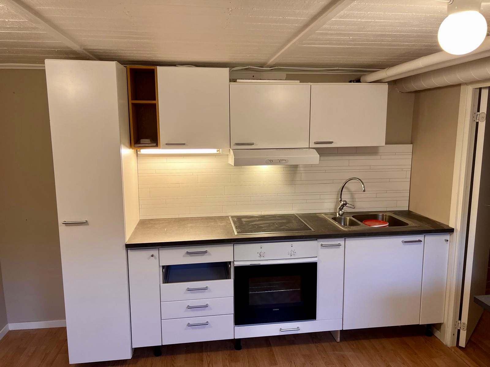

Projekt i Stockholm
Vi är stolta över att ha arbetat med många framstående kunder och projekt inom renovering, ombyggnad, tillbyggnad, byggservice, projektledning och arbetsledning. Här är några av våra referenser:
Våra Framgångsrika Uppdrag
-

Vällingby skolan -Tak Byggnation Montage/arbetsledning (Beställare Boetten Bygg AB)
-

Vällingby skolan - Tak Byggnation Montage/arbetsledning (Beställare Boetten Bygg AB)
-

JStora Sköndal- Nybyggnation äldreboende - Projektledning ( EBAB AB)
-

Äldreboende Roslags Näsby
-

Rallaren & Stinsen - Nybyggnation bostadsrätter i Enskededalen ( HSB )
-

Privat kund - före renovering av kök

Resultatet av Renovering
-

Privat kund - före renovering av tvättstuga till kök
-

Privat kund - efter renovering av vardagsrum
-

Privat kund - före renovering av tvättstuga till kök
-

Privat kund - före och efter renovering av vardagsrum
-

Privat kund - före renovering av vardagsrum

Flera privata kunder i Stockholmsområdet - Renoveringar, tillbyggnader, ombyggnader